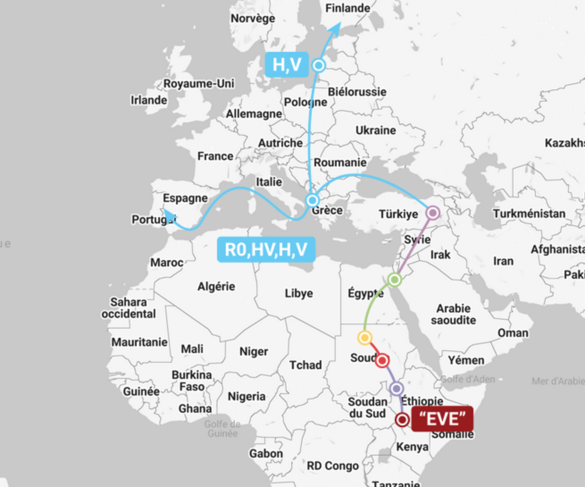

The North African Maternal Genetic Diversity Enriched by Historical Migrations
Boumajdi, N. et al. (2026). Mammalian Genome.
Summary
This 2026 study compiled 869 complete mitochondrial genomes from six North African populations to examine maternal diversity and population structure, with special emphasis on Morocco. The dataset is among the largest recent complete-mitogenome syntheses focused on North Africa.
The authors report high haplotype diversity and low genetic differentiation across populations (FST approximately 0.001-0.014), supporting a genetically cohesive Maghreb core. Across the full dataset, 56 maternal haplogroups were identified, with U6, H, and L as dominant components.
Demographic modeling suggests distinct trajectories among key lineages in Morocco: expansion in L, decline in U6, and expansion in H. The paper also integrates previously published Y-STR data, noting that E-M81 remains predominant in Moroccan, Algerian, and Tunisian populations.
Key Takeaways
- 869 complete mitogenomes from six North African populations provide high-resolution maternal lineage context
- Low between-population differentiation (FST approximately 0.001-0.014) supports a cohesive Maghreb genetic core
- Dominant maternal components are U6, H, and L, with deep branching in macro-haplogroup L
- Moroccan demographic modeling indicates expansion of L and H, with relative decline in U6
- Complementary Y-STR synthesis confirms ongoing predominance of E-M81 in the western/central Maghreb
Relevance to Our Lineage
For this site's dual-lineage framework, the study reinforces two central points: strong maternal diversity within a connected Maghreb population structure, and continued predominance of E-M81 on the paternal side. That alignment supports the broader Amazigh (Berber) continuity model presented in our lineage narrative.
The reported H expansion trend in Morocco is also consistent with the importance of H-derived maternal branches in western North Africa, while the U6 and L patterns emphasize that North African history includes both deep local roots and repeated historical gene flow.